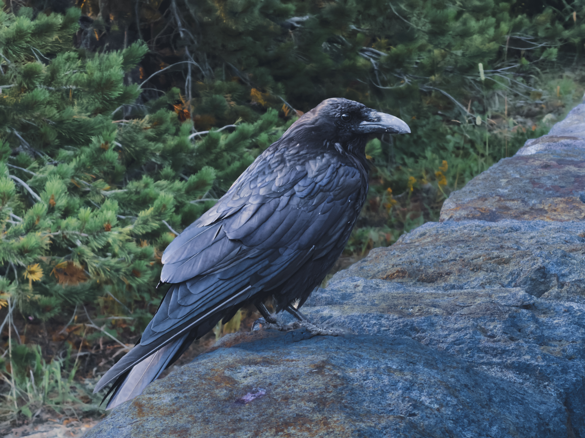
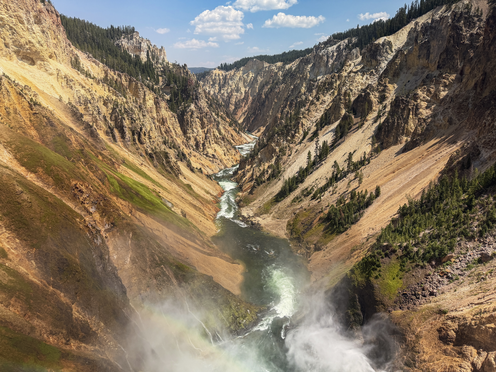
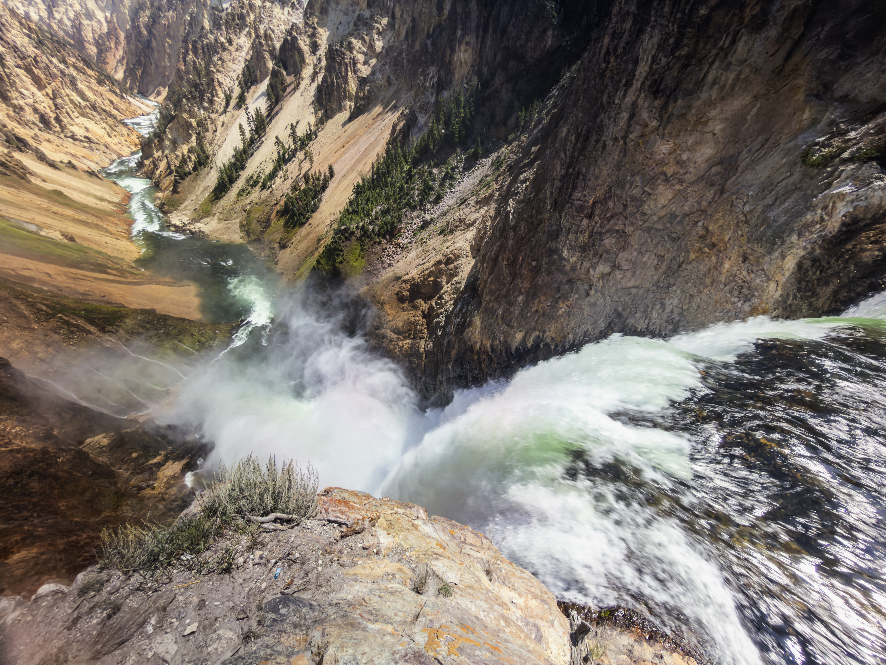
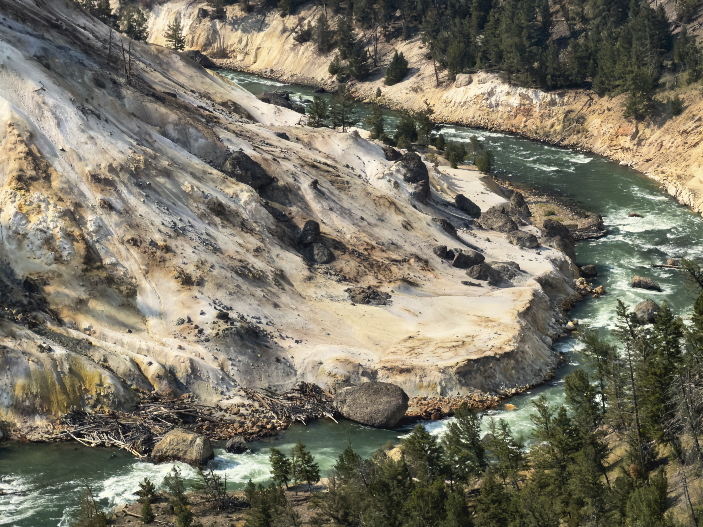
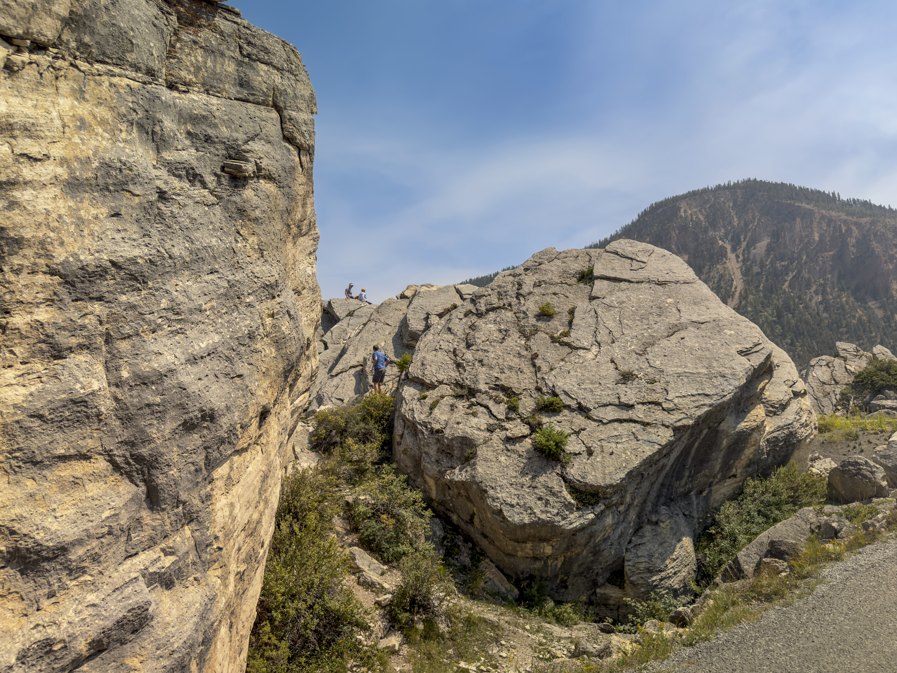
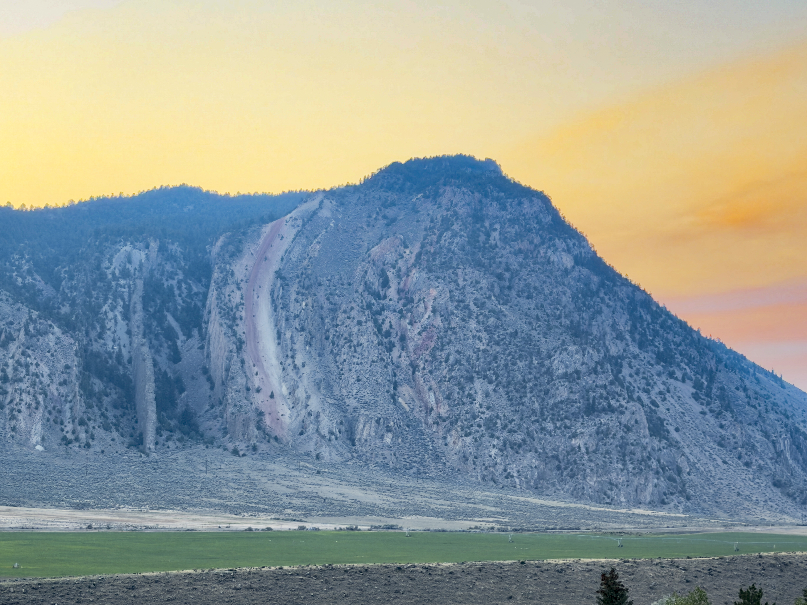
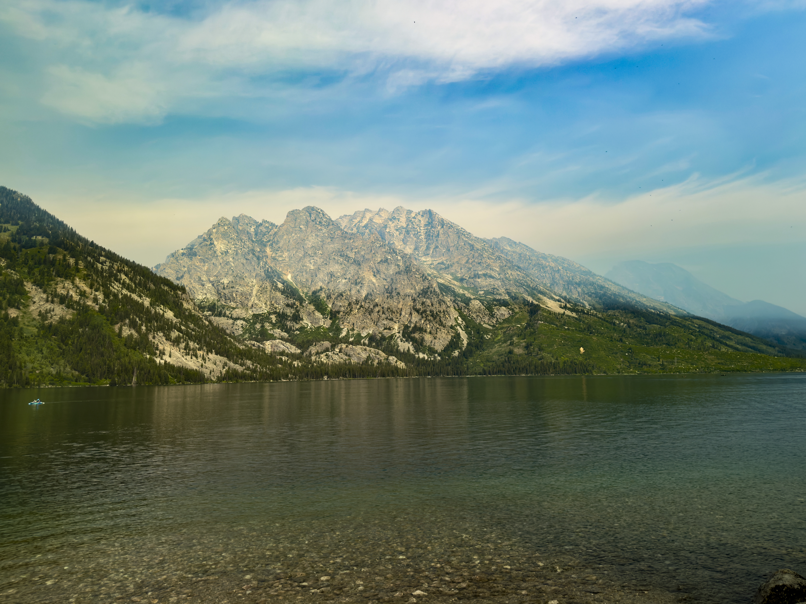
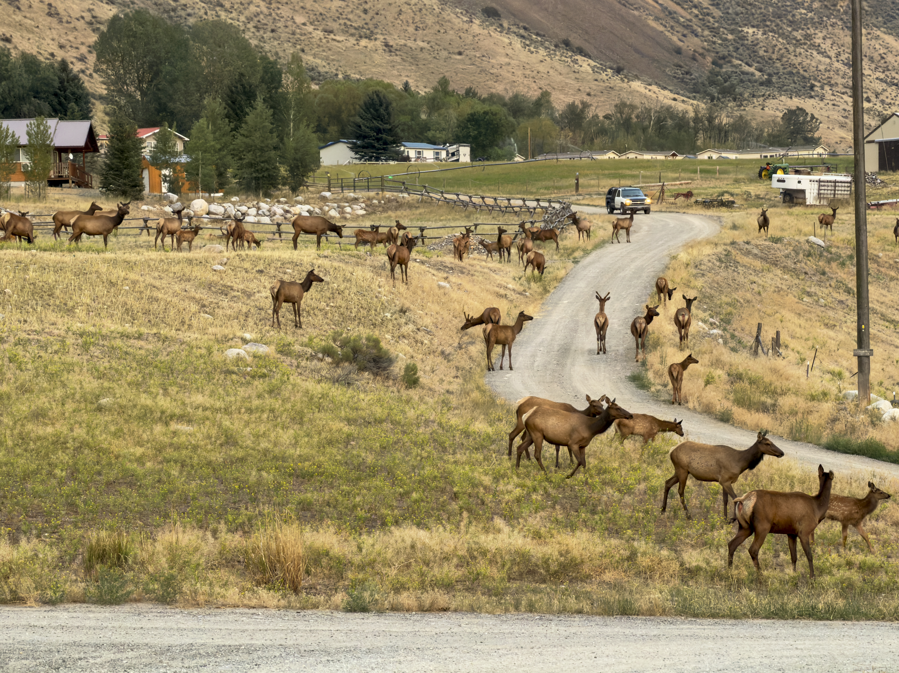
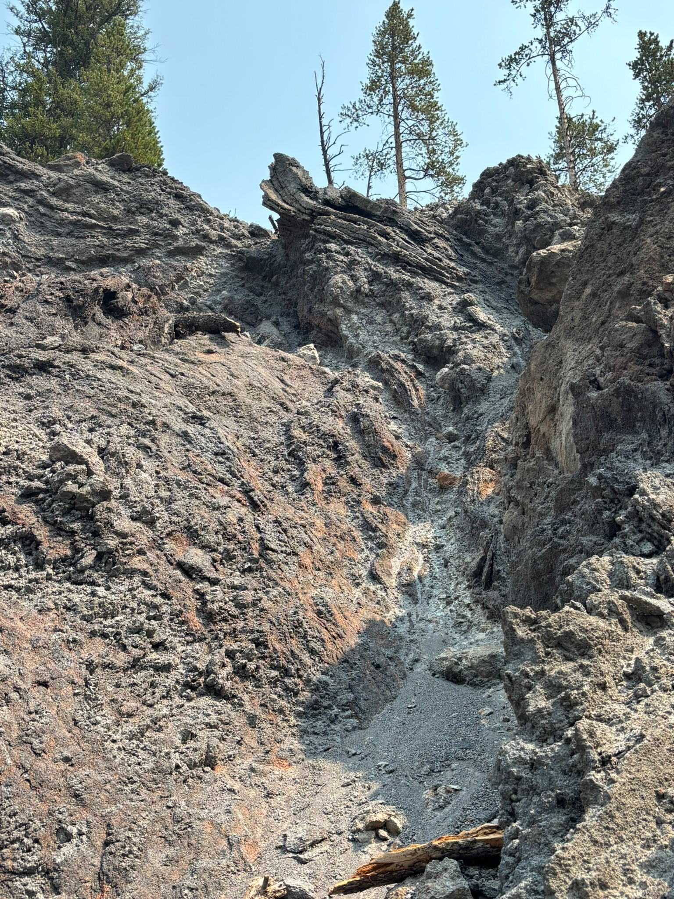
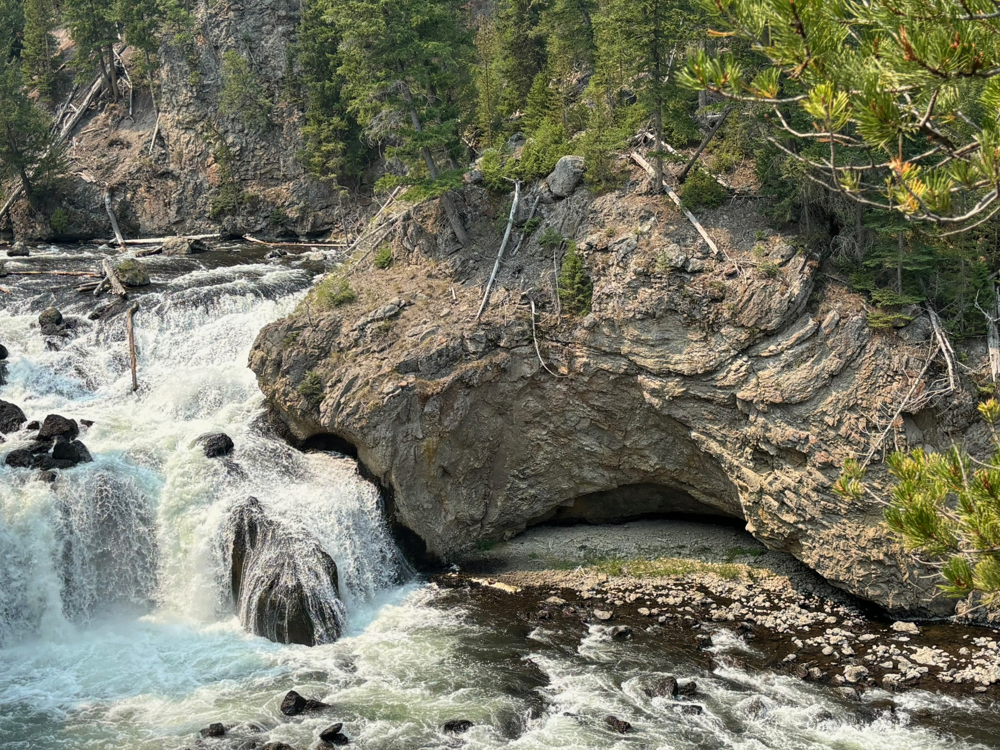

About Midway Geyser Basin
Day 4 of the Yellowstone trip
Midway Geyser Basin is home to a variety of very large hot springs, themselves harboring a vast amount of microorganisms, Among the largest is Grand prismatic, a breathtaking hot spring with microorganism-filled runoff spanning a vast amount of the rocks surrounding it.
Gallery:
 This funny thing is a raven. They're surprisingly more common than you'd think in Yellowstone, with several visible from a location at once, especially in canyon areas. Ravens are smart birds; if you leave things unattended they will undoubtedly attempt to get inside. |
 This magnificent canyone is Yellowstone's very own Grand Canyon. The yellow sandstone present here is actually how Yellowstone got its name, believe it or not. And behind this point of view is the Lower Falls of the canyon, evident by the rainbow. |
 The Lower Falls of Yellowstone Grand Canyon, falling down several hundred feet. The scale here cannot be compared to the original—the canyon itself is up to four thousand feet wide and one and a half thousand feet deep. The waterfall itself is quite incredibly loud. |
 These almost alien-looking formations are fumaroles, the black color coming from liquified sulfur seeping out of the holes. These aren't always visible though, and we were barely able to see smoke coming out of one of the vents. |
 These strange slanted rocks came from a very large landslide that happened well before I was born. Atop some of the rocks are people, showing just how enormous they are. There's an entire section of a mountainside road that's just these rocks, and they're all slanted. |
 This funky rock formation is Devil's Slide, a strange slanted mountain formation that my family and I could see from our hotel. This is near, not outside Yellowstone. Contrary to what you might think, there's little photo editing—the sky just looked like that. |
 This large lake is called Jenny Lake, and though not within Yellowstone, it is a worthwhile mention. Sitting right next to the Grand Tetons and a fault line, its bottom is peppered with small pebbles, which were thankfully able to be captured within the image. |
 This is a lot of elk, is what we all thought in unison. They're very common in and around Wyoming, and they create rather strange noises. The people who live around this area have gotten used to these Elk, and will not stop or heed, they will simply slow down. |
 This surreal formation is of the rhyolite lava flows present within Firehole Canyon, originating from over 600,000 years ago. The strange shape formed from the rhyolite lava cooling as it flowed, layering on top of itself as a result. This is among my personal favorite formations. |
 To the left is Firehole Falls, and to its right is a very strange curved rock formation. This was of course made by a similar lava flow to the previous image, except even more surreal. Uniquely, Firehole River is heated, meaning you can swim in it sometimes. |